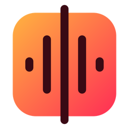
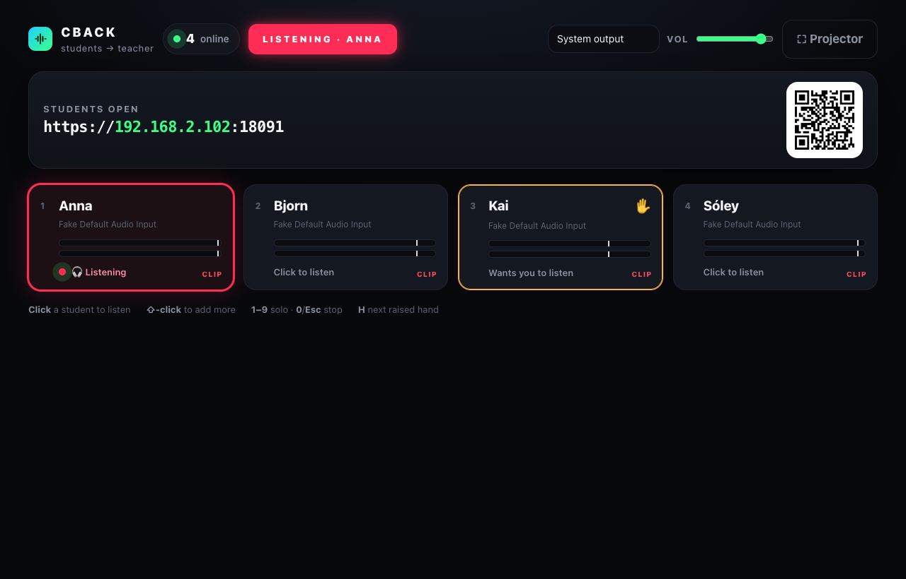
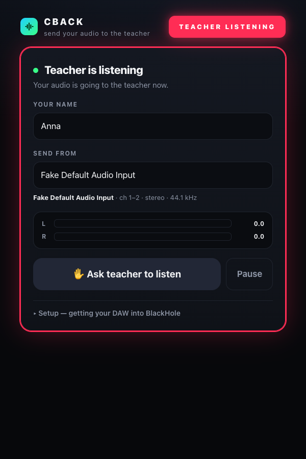

Students send whatever their DAW is playing straight to the teacher’s Mac over the classroom Wi‑Fi. The teacher clicks a name and listens. Nothing to install for students, stereo at 320 kb/s, about 50 ms behind. The reverse of CCAST.

Click CBACK in the Dock. Chrome opens the desk; project the link and QR code.
They scan, type a name, press Join. Their DAW plays into BlackHole; the page sends BlackHole.
Click a tile to hear that student, ⇧‑click for several, 1–9 to jump, H for the next raised hand.

Download, unzip to ~/CBack, and drag CBACK.app to the Dock. First launch: right‑click → Open, allow incoming connections, allow the microphone once (used only to name output devices). Needs Python 3 (built into macOS) and Chrome.
Install BlackHole 2ch. Make a Multi‑Output Device (headphones + BlackHole) and set it as the DAW’s output, so they still hear themselves. On the CBACK page pick BlackHole 2ch, not the Aggregate.
Chrome warns “not private” because the link is https with the teacher Mac’s own certificate: Advanced → Proceed, once. Browsers only allow audio capture on secure pages.
Everyone must be on the same network. School Wi‑Fi that isolates devices blocks it; a travel router or phone hotspot fixes that.
| Audio | Stereo Opus, 48 kHz, 320 kb/s, echo cancellation / noise suppression / AGC off |
| Delay | ≈ 50 ms on a good LAN (WebRTC, peer‑to‑peer, ~40 ms jitter buffer) |
| Server | One Python file, standard library only; only a tiny signalling mailbox, no audio passes through it |
| Privacy | The desk opens only on the teacher’s Mac; students can’t listen to each other. Works offline. |
| Ports | 8090 (desk) · 8091 (students, https). Runs alongside CCAST (8080 / 8443). |